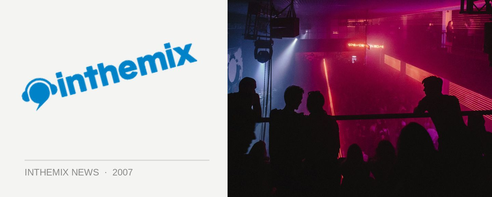

Block Party takes it to the nation
Local hip hop label Obese Records are taking their Block Party series of events to the next level with a national tour running from April to May featuring label favourites Muph & Plutonic, Pegz, Obese King and Funkoars amongst others.
The Block Party series of events were established three years ago in Melbourne and it has gone on to become a sold-out annual event, encouraging the Obese Records crew to take it on the road for an extensive national tour. Organisers say punters can look forward to dynamic sets that will incorporate live instruments and crowd interaction, and simply excellent examples of Aussie hip hop.
Check below for details on when the Obese Records experience will be coming to your town!
Melbourne, Friday 20th April: The Metro, Bourke St
Hobart, Saturday 21ST April: Uni Bar
Adelaide, Friday 27th April: Colonel Light
Sydney, Saturday 5th May: Manning Bar
Brisbane, Sunday 6th May: The Waterloo